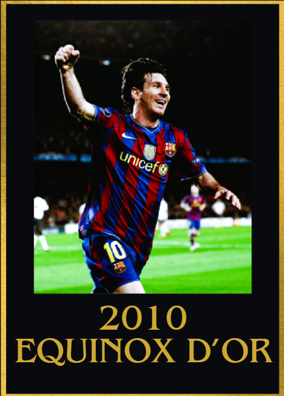
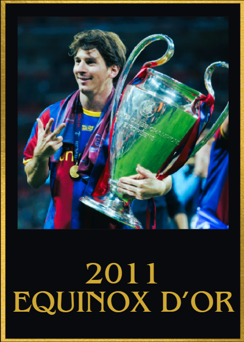
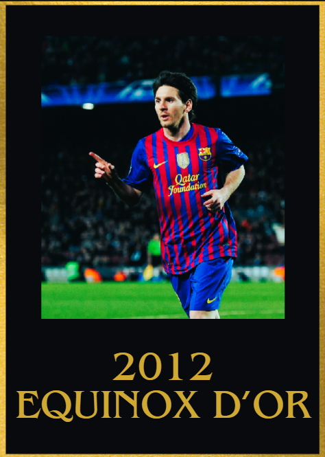
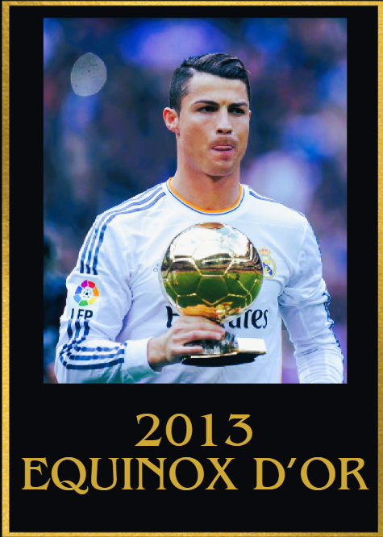
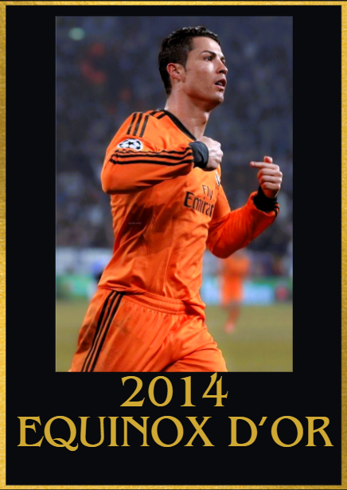
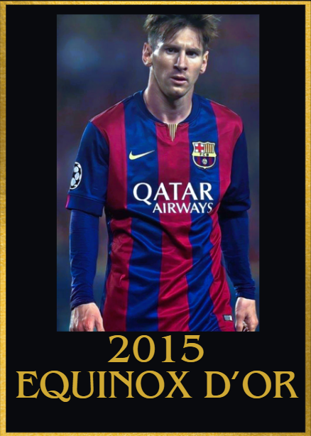
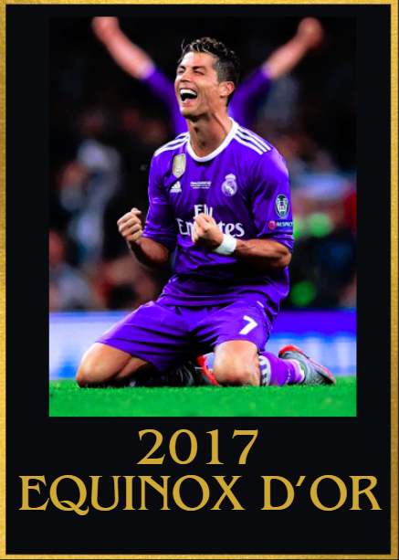
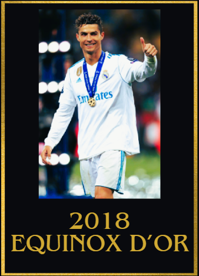
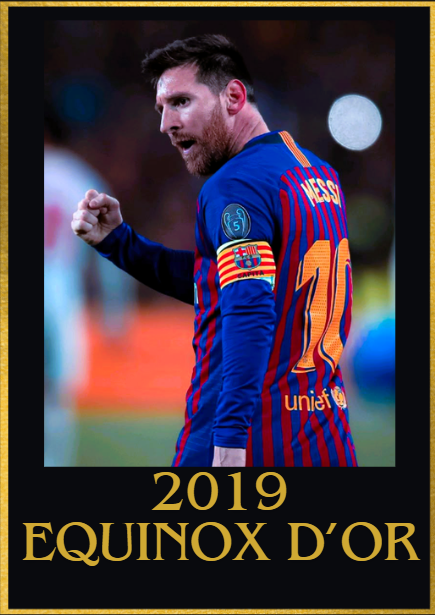

2010s Equinox d'Or Winners
2010
1st: Lionel Messi 🇦🇷 Barcelona
2nd: Xavi Hernández 🇪🇸 Barcelona
3rd: Cristiano Ronaldo 🇵🇹 Real Madrid
4th: Didier Drogba 🇨🇮 Chelsea
5th: Andres Iniesta 🇪🇸 Barcelona

Achievements
- 77 goal contributions
- Domestic treble win (La liga, Copa del Rey and Supercopa de España winner)
- IFFHS World's Best Top Goal Scorer
- European golden boot winner
- UEFA Champions League Top scorer
- Pichichi Winner
- La liga best player
- UCL semi finalist
Key Moments
- 4 goals vs Arsenal
- 2 assists vs Real Madrid
- Hat trick of assists vs Espanyol
- 3 goals and 1 assist vs Real Zaragoza and Tenrife
- 3 goals vs Valencia
- 2 goals and 2 assists vs Panathinaikos
- 3 goals and 2 assists vs Almeria
- Brace vs Atletic Bilbao in the Supercopa de España final
- 3 goal contributions vs Real Valladolid, Sevilla, Getafe and Osassuna
2011
1st: Lionel Messi 🇦🇷 Barcelona
2nd: Cristiano Ronaldo 🇵🇹 Real Madrid
3rd: Xavi Hernández 🇪🇸 Barcelona
4th: Andres Iniesta 🇪🇸 Barcelona
5th: Wayne Rooney 🏴 Manchester United

Achievements
- 96 goal contributions
- UEFA champions league winner
- UEFA Champions league top scorer
- La liga and UCL player of the season
- Copa del rey top scorer
- Club world cup winner and UEFA super cup winner
- La liga and Supercopa de España winner
- Broke the record for most assists in a calendar year
Key Moments
- 10/10 rating in the UEFA Champions league final vs Manchester United
- Brace vs Real Madrid in the UEFA champions league semi finals
- 3 goal contributions vs Deportivo La Coruna,Villarreal and Almeria(on 2 seperate ocassions)
- Hat-trick vs Atletico de Madrid, Real Betis, Sevilla and Viktoria Plezen
- 2 goal contributions vs Fc Porto in the UEFA Super cup final
- 3 goals and 2 assists vs Osassuna
- 3 goals and 1 assist vs Atletico de Madrid and Mallorca
- 5 goal contributions vs Real Madrid across 2 legs in the Supercopa de España final
2012
1st: Lionel Messi 🇦🇷 Barcelona
2nd: Cristiano Ronaldo 🇵🇹 Real Madrid
3rd: Andrea Pirlo 🇮🇹 Juventus
4th: Andres Iniesta 🇪🇸 Barcelona
5th: Xavi Hernández 🇪🇸 Barcelona

Achievements
- IFFHS World's Best Top Goal Scorer
- Broke the record for most goals in a calendar year
- European golden shoe
- UEFA Champions league semi finalist
- UEFA champions league golden boot
- Pichichi trophy
- La liga MVP
- Copa del Rey winner
- 113 goal contributions(most in a calendar year)
Key Moments
- 5 goals vs Bayer 04 Leverkusen in the UEFA champions league round of 16
- Scored a poker vs Espanyol, Valencia and Malaga
- Scored a hat trick vs Malaga, Switzerland and Brazil
- 2 goals and 3 assists vs Rayo Vallenaco
- 3 goal contributions vs Getafe and Real Zaragoza(on 2 different occassions)
- 3 goals and 1 assists vs Deportivo La Coruna
- 2 goals and 2 assists vs Granada
- Decisive brace(including a free kick) vs Real Madrid in La liga
- Accumualted 24 goal contributions in 10 consecutive league games(first half of the year)
- Accumulated 14 goal contributions in 7 consecutive games (in the second half of the year)
2013
1st: Cristiano Ronaldo 🇵🇹 Real Madrid
2nd: Lionel Messi 🇦🇷 Barcelona
3rd: Arjen Robben 🇳🇱 Bayern München
4th: Manuel Neuer 🇩🇪 Bayern München
5th: Franck Ribéry 🇫🇷 Bayern München

Achievements
- UEFA champions league top scorer
- IFFHS World's Best Top Goalscorer Award
- Copa del Rey runner up
- UEFA Nations League Winner
- 87 goal contributions
- Broke the record for most UEFA champions league goals in a calendar year and in the group stage
- Copa del Rey top scorer
- Scored against every opponent he faced that year
Key Moments
- A hat trick that helped Portugal comeback vs Sweden and qualify for the 2014 world cup
- Hat trick vs Northern Ireland
- 6 goals in the UEFA Champions league knockout round
- Hat trick vs Getafe, Celta Vigo and Sevilla
- 3 goals and 1 assist vs Sevilla, Galatasaray and Real Sociedad
- 3 goal contributions vs Atletic Bilbao and Malaga
- Scored the only goal in the Copa del Rey final for Madrid
- 4 goal contributions vs Getafe
- Brace vs Barcelona in the Copa del Rey semi finals
2014
1st: Cristiano Ronaldo 🇵🇹 Real Madrid
2nd: Lionel Messi 🇦🇷 Barcelona
3rd: Manuel Neuer 🇩🇪 Bayern München
4th: Arjen Robben 🇳🇱 Bayern München
5th: Toni Kroos 🇩🇪 Bayern München/ Real Madrid

Achievements
- 85 goal contributions
- UEFA champions league winner
- UEFA champions league top scorer(also broke the record for most goals in a single UEFA champions league campaign)
- Pichichi winner
- European golden shoe winnner
- IFFHS World's Best Top Goal Scorer Award
- Club world cup winner
- UEFA super cup winner
- Copa del Rey winner
Key Moments
- 6 goal contributions vs Schalke 04 in the UEFA champions league R016(2 legs)
- Brace vs Bayern München in the UEFA champions league semi finals
- Clutch equaliser vs Slovakia during Injury time
- Assist vs Barcelona in the Supercopa de España final
- Scored in 8 consecutive La liga games (first half of the year)
- 1 goal and 1 assist vs Atletico de Madrid in the UEFA Champions league final
- Brace vs Sevilla in the UEFA Super Cup final
- Hat tricks vs Dpeortivo La Coruna and Celta Vigo
- Poker vs Elche
- 3 goals and 1 assist vs Atletic Bilbao
- 3 goal contributions vs Granada, Rayo Vallenaco and Eibar
- Accumulated 33 goal contributions in 14 consecutive La liga games (second half of the year)
- 2 assists vs CD Cruz Azul in the Fifa Club world cup semi finals
2015
1st: Lionel Messi 🇦🇷 Barcelona
2nd: Cristiano Ronaldo 🇵🇹 Real Madrid
3rd: Neymar Jr 🇧🇷 Barcelona
4th: Luis Suarez 🇺🇾 Barcelona
5th: Robert Lewandowski 🇵🇱 Bayern München

Achievements
- UEFA Champions League golden boot
- La liga winner
- UEFA Champions League Winner
- Copa Del Rey Winner
- Most assists in La Liga
- 78 goal contributions
- UEFA Super cup winner
- La liga MVP
- Copa America finalist
- Club World Cup winner
- Copa America Player of the tournamnet
- UEFA Champions League Player Of The Season
Key Moments
3 goal contributions vs Bayern in the UCL semis
Hat trick of assists vs Atletic Bilbao
Hat trick vs Levante, Rayo Vallenaco
Brace in the copa del rey final
Hat trick of assists vs Paraguay in Copa America semi final
3 goal contributions vs Sevilla in the UEFA super cup final
Scored and assisted in a game on 16 different occasions
2016
1st: Cristiano Ronaldo 🇵🇹 Real Madrid
2nd: Lionel Messi 🇦🇷 Barcelona
3rd: Neymar Junior 🇧🇷 Barcelona
4th: Luis Suarez 🇺🇾 Barcelona
5th: Antoine Griezmann 🇫🇷 Atletico de Madrid

Achievements
- UEFA Champions League Winner
- Euros Winner(Winning the first ever international trophy for Portugal)
- UEFA Champions League golden boot
- Euros Silver boot
- Euros Silver Ball
- UEFA Champions League player of the Season
- 72 goal contributions
- UEFA Super cup winner
- Club world cup winner
- Club world cup top scorer
Key Moments
- Iconic comeback where he scored a hat trick vs Wolfsburg in the UEFA champions league quarter finals
- 3 goal contributions vs AS Roma in the UEFA champions league RO16
- Poker vs Celta Vigo
- Hat trick vs Espanyol
- Crucial winning goal vs Barcelona
- 3 goal contributions vs Hungary
- Game winning goal vs wales to send Portugal to the Euros final
- Hat trick in the Club World Cup final vs Kashima Antlers
- Hat trick vs Alaves
- Hat trick vs Atletico Madrid
- Game winning penalty to seal the UEFA Champions League win for Real Madrid in the final vs Atletico de Madrid
2017
1st: Cristiano Ronaldo 🇵🇹 Real Madrid
2nd: Lionel Messi 🇦🇷 Barcelona
3rd: Neymar Junior 🇧🇷 Barcelona
4th: Gianluigi Buffon 🇮🇹 Juventus
5th: Luka Modric 🇭🇷 Real Madrid

Achievements
- Broke the record for most UEFA Champions league goals in a calendar year (19 goals)
- UEFA champions league winner
- First player to score 10 goals in the UEFA Champions League knockouts (in the UEFA Champions League Era)
- UEFA Champions League Golden boot
- Scored in 7 consecutive UCL games (extending it to 11 in 2018)
- La Liga Winner
- Supercopa de España winner
- UEFA super cup winner
- Club World cup winner
- 3rd place finish in the Confederations cup with Portugal
- 66 Goal contributions
Key Moments
- 5 goal contributions vs Bayern across two legs in the UEFA Champions league quarter finals
- A hat trick against Atletico in the UEFA Champions League Semi finals
- A brace vs Juventus in the UEFA Champions League final
- Game winning goal vs Barcelona in the Supercopa de España final
- Brace vs Borussia Dortmund
- Free kick goal vs Gremio to secure the CWC victory for Real Madrid
- 3 goals and 1 assist vs Faroe Islands
- 2 goals and 1 assist vs Latvia
2018
1st: Cristiano Ronaldo 🇵🇹 Real Madrid/Juventus
2nd: Lionel Messi 🇦🇷 Barcelona
3rd: Luka Modric 🇩🇪 Real Madrid
4th: Kylian Mbappé 🇫🇷 Paris Saint-Germain
5th: Neymar Junior 🇧🇷 Paris Saint-Germain

Achievements
- 62 goal contributions
- UEFA champions league winner
- UEFA champions league Top scorer(extended his scoring streak to 11 games this year)
- World Cup Silver Boot
Key Moments
- Clutch Hat trick vs Spain in the World Cup
- Match winning goal vs Morocco to send Portugal to the World Cup knockouts
- 3 goals and 1 assist vs PSG across 2 legs in the UEFA Champions League RO16
- 3 goals and 1 assist vs Juventus across 2 legs in the UEFA champions league Quarter finals (including his infamous bicycle kick)
- 3 goal contributions vs Deportivo La Coruna
- A Hat trick and 1 assist vs Real Sociedad
- 4 goals and 1 assist vs Girona
- Scored and assisted 20 times in his last 10 la Liga appearances
- Clutch braces vs Sassuolo, Empoli, Sampdoria, Valencia , Alaves, Getafe and Eibar
- Clutch equalizers vs Barca and Atletico Madrid
2019
1st: Lionel Messi 🇦🇷 Barcelona
2nd: Virgil Van Dijk 🇳🇱 Liverpool
3rd: Cristiano Ronaldo 🇵🇹 Juventus
4th: Kylian Mbappé 🇫🇷 Paris Saint-Germain
5th: Mohamed Salah 🇪🇬 Liverpool

Achievements
- La Liga Winner
- La Liga Player of the season
- UEFA champions league top scorer
- Pichichi winner
- European golden shoe winnner
- Copa del Rey finalist
- Top assister in La liga
- 3rd place finish in Copa America
- IFFHS Best playmaker award
- 69 Goal contributions
- 200+ successful dribbles
- 100+ key passes and 40+ Big chances created
- 25 man of the matches
Key Moments
- 2 goals and 2 assists vs Olympique Lyon in the UEFA Champions league Round of 16
- Brace vs Manchester United in the UEFA Champions League Quarter finals
- Brace vs Liverpool in the UEFA Champions League Semi finals
- Hat trick vs Sevilla, Real Betis, Celta Vigo and Mallorca
- 4 goal contributions vs Rayo Vallenaco
- 3 goal contributions vs Borussia Dortmund
- An assist to secure a third place finish in the Copa America vs Chile